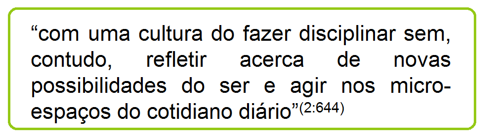

Desde quando se fala em SAE?
E qual a legislação brasileira que embasa a SAE?
O surgimento da enfermagem, associado à iniciativa das práticas de Florence Nightingale, trouxe, como componente essencial dessa profissão, o cuidado, o qual, ao longo de sua história, vem sendo apreendido por uma visão dúbia: ora é considerado como arte, ora, como ciência.
A preocupação com o saber científico da enfermagem nasceu conjuntamente com sua consolidação, pois Florence já defendia uma profissão embasada em questionamentos, o que requeria conhecimentos distintos da medicina (TANNURE; GONÇALVES, 2006).
Florence, portanto, já defendia alguns dos princípios da SAE, em busca dos muitos benefícios que este instrumento pode proporcionar à enfermagem. Assista a este vídeo e tente reconhecer nas ideias de Florene Nightingale os elementos que integram o conceito da SAE!
Todavia, é inquestionável na literatura o fato de que, por muitos anos, a enfermagem renegou tal caráter científico, conformando-se:
Em decorrência disto, a arte do cuidar por muitos anos caracterizou-se, primordialmente, por práticas técnicas imediatas, não valorizando a cientificidade da profissão.
Paulatinamente, tais ações foram sendo questionadas, a ponto de a década de 1950 representar o marco do processo de tentativa de se vir a reorganizar o conhecimento da enfermagem, visto ter sido nessa década que se deu o avanço significativo no desenvolvimento de modelos conceituais, tendo por escopo o estabelecimento de expoentes teóricos para os profissionais de enfermagem (NÓBREGA; SILVA, 2009).
No contexto brasileiro, podemos referenciar alguns marcos fundamentais que contribuíram na luta para a defesa e efetivação da enfermagem enquanto ciência do cuidar, o que, vale ressaltar, constitui um processo ainda presente nos dias atuais, em que se busca, cada vez mais, subsídios que afirmem a teoria na prática cotidiana dos seus profissionais.
Inicialmente, a precursora dessa discussão no panorama brasileiro foi Wanda Aguiar Horta, na segunda metade dos anos de 1960, sendo ela a primeira enfermeira brasileira a falar de teoria no campo profissional, a exemplo de um movimento internacional de fomento de teorias para embasamento da prática profissional (TANNURE; GONÇALVES, 2006).

Horta desenvolveu a Teoria das Necessidades Humanas Básicas, propondo uma assistência sistematizada, tendo em vista que as necessidades dos sujeitos, decorrentes de desequilíbrios, exigem do profissional de enfermagem uma prática que reflita sobre tais necessidades, a fim de se poder vir a contribuir efetivamente para um reequilíbrio dinâmico no tempo e no espaço desses sujeitos (OLIVEIRA; PAULA; FREITAS, 2007).
Posteriormente, merece destaque, em nosso território, a década de 1980, quando, em 1986, por meio da Lei nº 7498, o exercício profissional da enfermagem é regulamentado, apresentando como atividades privativas do enfermeiro a Consulta e a Prescrição de Enfermagem. Nesse documento, são estabelecidas as categorias profissionais componentes da enfermagem, a saber: enfermeiro, técnico de enfermagem, auxiliar de enfermagem e parteira, respeitados os respectivos graus de habilitação (BRASIL, 1987).
Em 2002, em mais uma tentativa de reafirmação da enfermagem como ciência do cuidado, o Conselho Federal de Enfermagem (COFEN) apresentou a Resolução nº 272, determinando que a SAE é uma incumbência privativa do enfermeiro, devendo ocorrer em toda instituição de saúde, pública e privada e ser registrada formalmente no prontuário do usuário (CONSELHO FEDERAL DE ENFERMAGEM, 2002).
Em 2009, o COFEN fomentou a Resolução nº 358, reafirmando o processo de enfermagem (PE) – discutiremos ainda a diferença entre SAE e PE – como um meio de evidenciar a contribuição da enfermagem na atenção à saúde da população, aumentando, assim, o reconhecimento profissional do enfermeiro (CONSELHO FEDERAL DE ENFERMAGEM, 2009).
A Resolução nº 358 aponta, ainda, a participação do Técnico de Enfermagem na SAE, profissional que, até então, não havia sido citado diretamente nas legislações brasileiras como componente fundamental na operacionalização da SAE.
Vamos conferir, então, um resumo das principais legislações nacionais no que concerne à SAE:


De maneira geral, pode-se constatar que o empenho pela consolidação da enfermagem enquanto profissão de base científica vem se intensificando no decorrer da história brasileira, notadamente com a defesa de que a SAE se constitui uma estratégia ímpar para a consecução dessa premissa.
Todavia, mesmo diante das incontestáveis vantagens trazidas pela adoção da SAE, a literatura é unânime em afirmar que sua implementação ainda se caracteriza como um desafio, destacando-se como dificuldades a serem superadas (ANDRADE; VIEIRA, 2005; FIGUEIREDO et al., 2006; FRANÇA et al., 2007; FULY; LEITE; LIMA, 2008; GONÇALVES et al., 2007; HERMIDA, 2004; KOERICH et al., 2007; NASCIMENTO et al., 2008; RAMOS; CARVALHO; CANINI, 2009; RAPPETO; SOUZA, 2005):

Além disso, merecem destaque os conflitos de conhecimento ainda vivenciados pelos profissionais de enfermagem, fragmentando assim as etapas componentes do PE e, muitas vezes, entendendo ser o registro das ações realizadas sinônimo de SAE. Este, é válido ressaltar, “[...] é uma atividade fim e não o meio para sistematizar a assistência. A documentação do processo de enfermagem não é o processo de enfermagem por si só” (FULY; LEITE; LIMA, 2008, p. 885).
Diante de tal estado da arte, muitos estudos analisados apresentam possibilidades de melhoria para a real solidificação da SAE em nosso cenário, enfatizando: a necessária formação acadêmica qualificada; a essencialidade da definição de papéis e de responsabilidades de todos os integrantes da equipe de enfermagem; o uso de roteiros facilitadores; e a inclusão do tema nas escolas de formação de TE (AMANTE; ROSSETTO; SCHNEIDER, 2009; FRANÇA et al., 2007; HERMIDA, 2004; RAMOS; CARVALHO; CANINI, 2009; RAPPETO; SOUZA, 2005; TRUPPEL et al., 2009; VIEIRA, 2005).
Neste contexto, almejando superar a visão cartesiana e burocrática atribuída por muitos à SAE, defende-se sua implementação segundo preceitos críticos-reflexivos, o que se deve pautar por uma tríade fundamental, a saber: a interdisciplinaridade, por meio de um olhar diferenciado para os contornos do processo saúde/doença; o trabalho em equipe, munido de habilidades e competências, por meio do qual os profissionais de enfermagem revelem sensibilidade, habilidade para empreender e conhecimento estratégico; e a valorização do protagonismo dos usuários, vistos como sujeitos ativos, criativos e dialógicos (KOERICH et al., 2007).
Em suma, constata-se que a SAE se configura como uma ferramenta capaz de proporcionar um cuidado individualizado, humanizado e resolutivo, melhorando, assim, a qualidade assistencial e ampliando a autonomia da enfermagem e a comunicação interdisciplinar.
Entretanto, inúmeros desafios ainda são visualizados para que tal método seja consolidado por todos. Destaca-se, nesse processo, a integração do profissional técnico de enfermagem, sujeito em contato contínuo com o usuário, capaz de contribuir imensamente para a efetivação da SAE.
Referências:
- Tannure MC, Gonçalves AMP. Sistematização da Assistência de Enfermagem – Guia Prático. Rio de Janeiro, RJ: Guanabara Koogan; 2006.
- Nascimento KC, Backes DS, Koerich MS, Erdmann AL. Sistematização da assistência de enfermagem: vislumbrando um cuidado interativo, complementar e multiprofissional. Rev Esc Enferm USP. 2008; 42(4):643-8.
- Nóbrega MML, Silva KL. Fundamentos do cuidar em Enfermagem. 2ª ed. Belo Horizonte, MG: ABEN; 2009.
- Brasil. Lei No 7.498, de 25 de junho de 1986. Dispõe sobre a regulamentação do exercício da Enfermagem e dá outras providências. Diário Oficial da República Federativa do Brasil, 26 Jun 1986. Seção 1.
- Conselho Federal de Enfermagem. Enfermagem em Dados [online]. 2011 [acesso em 2013 Jun 29]. Disponível em: http://novo.portalcofen.gov.br/planejamento-estrategico-2
- Conselho Federal de Enfermagem. Resolução n. 358, de 15 de outubro de 2009. Dispõe sobre a Sistematização da Assistência de Enfermagem e a implementação do Processo de Enfermagem em ambientes, públicos ou privados, em que ocorre o cuidado profissional de Enfermagem, e dá outras providências. Brasília (DF): COFEN; 2009.
- Andrade JS, Vieira MJ. Prática assistencial de enfermagem: problemas, perspectivas e necessidade de sistematização. Rev Bras Enferm. 2005; 58(3):261-5.
- Figueiredo RM, Zem-Mascarenhas SH, Napoleão AA, Camargo AB. Caracterização da produção do conhecimento sobre sistematização da assistência de enfermagem no Brasil. Rev Esc Enferm USP. 2006; 40(2):299-303.
- França FCV, Kawaguchi IAL, Silva EP, Abrão GA, Uemura H, Alfonso LM, et al. Implementação do diagnóstico de enfermagem na unidade de terapia intensiva e os dificultadores para enfermagem – relato de experiência. Rev Eletr Enf. 2007; 9(2).
- Fuly PSC, Leite JL, Lima SBS. Correntes de pensamento nacionais sobre sistematização da assistência de enfermagem. Rev Bras Enferm. 2008; 61(6):883-7.
- Gonçalves LRR, Nery IS, Nogueira LT, Bonfim ES. O desafio de implantar a sistematização da assistência de enfermagem sob a ótica de discentes. Esc Anna Nery Rev Enferm. 2007; 11(3):459-65.
- Hermida PMV. Desvelando a implementação da Sistematização da Assistência de Enfermagem. Rev Bras Enferm. 2004; 57(6):733-7.
- Koerich MS, Backes DS, Nascimento KC, Erdmann AL. Sistematização da assistência: aproximando o saber acadêmico, o saber-fazer e o legislar em saúde. Acta Paul Enferm. 2007; 20(4):446-51.
- Ramos LAR, Carvalho EC, Canini SRMS. Opinião de auxiliares e técnicos de enfermagem sobre a sistematização da assistência de enfermagem. Rev Eletr Enf. 2009; 11(1):39-44.
- Rappeto MA, Souza MF. Avaliação da realização e do registro da Sistematização da Assistência de Enfermagem (SAE) em um hospital universitário. Rev Bras Enferm. 2005; 58(3):325-9.

- Sistematização da Assistência de Enfermagem: subsísios para implantação
- O desafio de implantar a Sistematização da Assistência de Enfermagem sob a ótica de discentes
- A implementação da sistematização da assistência de enfermagem no serviço de saúde hospitalar do Brasil
- Competências na formação de Técnicos de Enfermagem para implementar a Sistematização da Assistência de Enfermagem

Que tal refletir um pouco sobre as dificuldades de operacionalização da SAE e como enfrentá-las?
A proposta é que você construa uma História em Quadrinhos (HQ) que destaque o seu aprendizado sobre esses dois elementos.
Sugere-se que a HQ represente um diálogo entre profissionais de enfermagem, em que os desafios sejam apontados e os meios de enfrentamento em prol da consolidação da SAE.
Seguem algumas dicas de sites que poderão auxiliá-lo nessa reflexão:
Bom aprendizado!